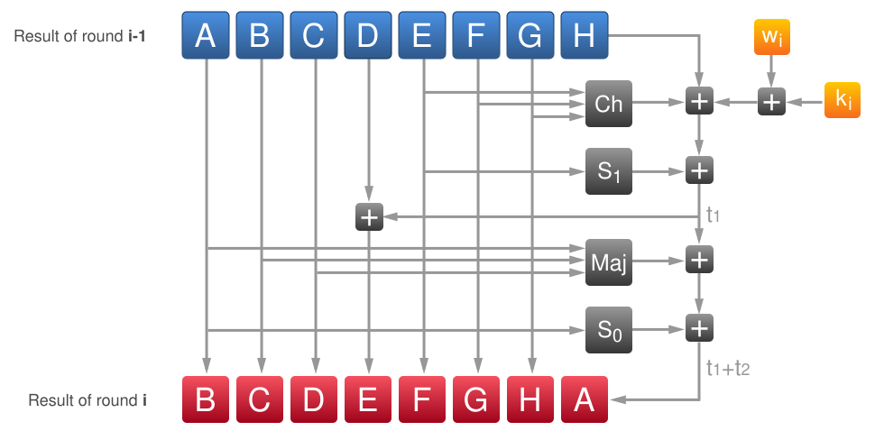

Hiện tại, thông điệp của bạn dài ... bits (...
bytes). Chúng ta cần thêm độ dài của thông điệp (dưới dạng số nguyên
64-bit) vào cuối và đảm bảo tổng độ dài phải là bội số của 512 bits (64
bytes). Ngay sau thông điệp gốc, ta thêm một bit "1", sau đó là các bit
"0" để lấp đầy khoảng trống cho đến khi đạt độ dài yêu cầu.
Thông điệp gốc ↓ Thông điệp sau khi chuẩn hóa (đã đệm)
Trong sơ đồ trên, các ô màu xám đại diện cho phần **đệm (padding)** và các ô màu đỏ hiển thị **độ dài thông điệp** đã được mã hóa.
Để kết quả băm trông ngẫu nhiên nhất có thể, thuật toán cần các giá trị khởi đầu. Trong SHA-256, các giá trị này rất minh bạch: chúng được lấy từ phần phân số của căn bậc hai và căn bậc ba của các số nguyên tố.
Chúng ta cần 8 giá trị băm khởi tạo (h) lấy từ căn bậc hai của 8 số nguyên tố đầu tiên (2, 3, ..., 19) và 64 hằng số vòng lặp (k) lấy từ căn bậc ba của 64 số nguyên tố đầu tiên (2, 3, ..., 311).
← h0 → Căn bậc hai của 2 ↓ Biểu diễn số thập phân 1.4142135623 ↓ Lấy phần phân số 0.4142135623 ↓ Chuyển sang hệ HEX (32-bit) 0.6a09e667 ↓ Giá trị khởi tạo cuối cùng 6A 09 E6 67
← k0 → Căn bậc ba của 2 ↓ Biểu diễn số thập phân 1.2599210498 ↓ Lấy phần phân số 0.2599210498 ↓ Chuyển sang hệ HEX 0.428a2f98 ↓ Hằng số vòng lặp 42 8a 2f 98
Mỗi khối 512-bit được chia thành 16 từ (word) 32-bit. Để chạy đủ 64 vòng lặp, ta cần tạo thêm 48 từ nữa (tổng cộng 64 từ wi) bằng công thức:
wi = wi-16 + s0(wi-15) + wi-7 + s1(wi-2)
Trong đó ⋙ là xoay phải (circular shift), ≫ là
dịch phải (right shift) và ⊕ là phép toán XOR.
← Khối dữ liệu (Chunk) 0 → ← Từ thông điệp w0 → Lấy trực tiếp từ thông điệp ↓
Chúng ta sử dụng 8 biến tạm thời A, B, C, D, E, F, G, H được khởi tạo bằng giá trị h0-h7 hiện tại. Qua mỗi vòng lặp, các biến này sẽ thay đổi vị trí và giá trị dựa trên các hàm logic phi tuyến tính.
Nhấp vào các ô vuông trong sơ đồ dưới đây để xem chi tiết quá trình tính toán tại vòng lặp đó.

Sau 64 vòng lặp, các giá trị cuối cùng của A...H sẽ được cộng vào h0...h7 ban đầu để tạo ra kết quả cho khối tiếp theo.